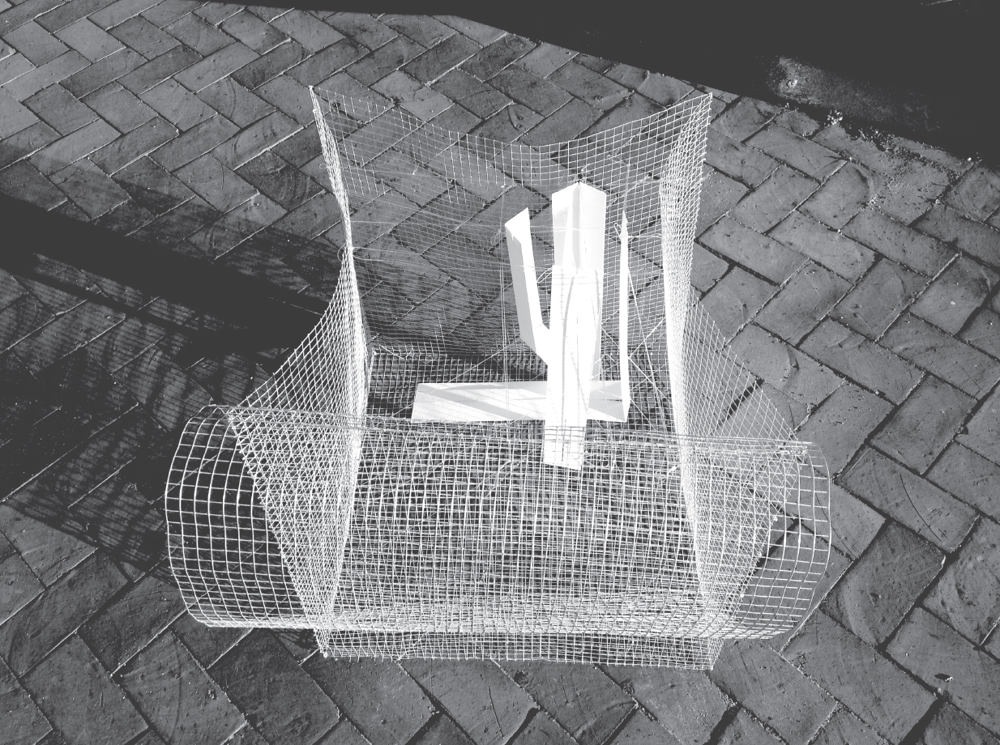
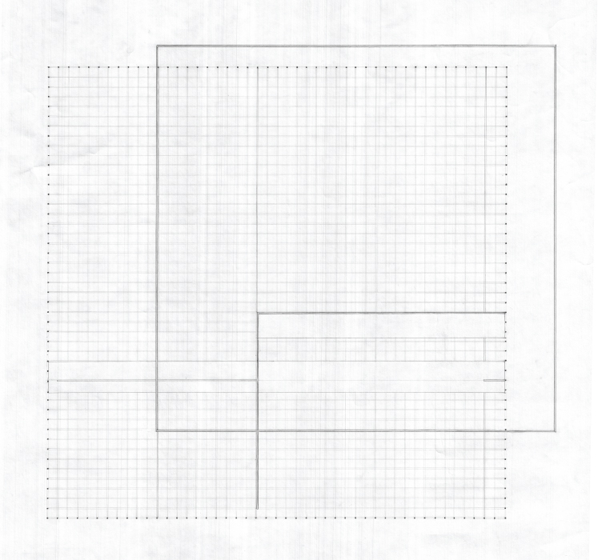
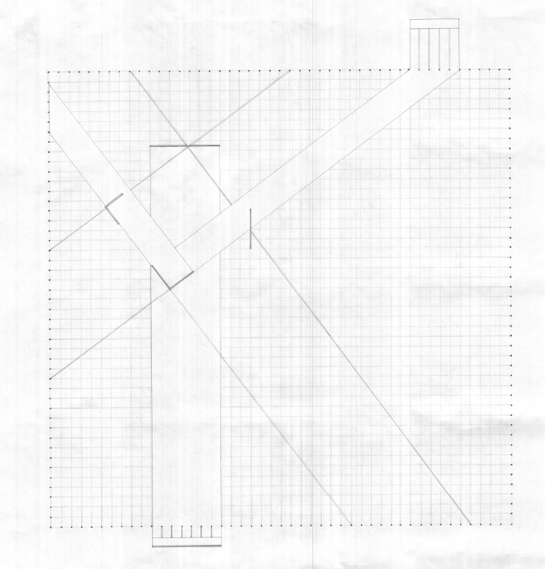
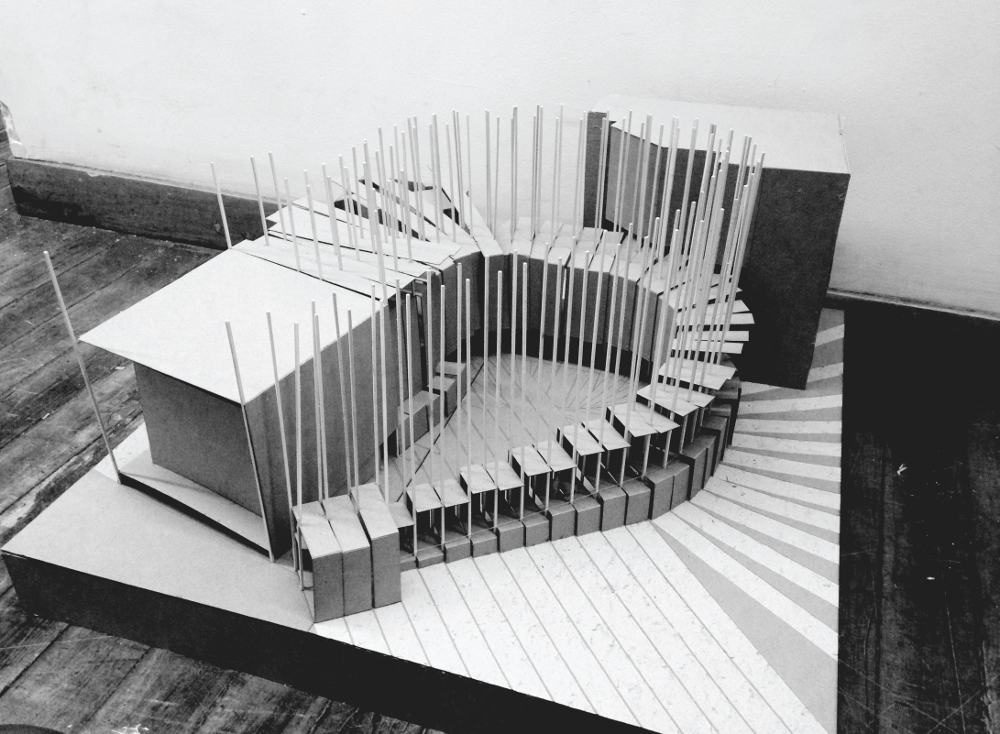
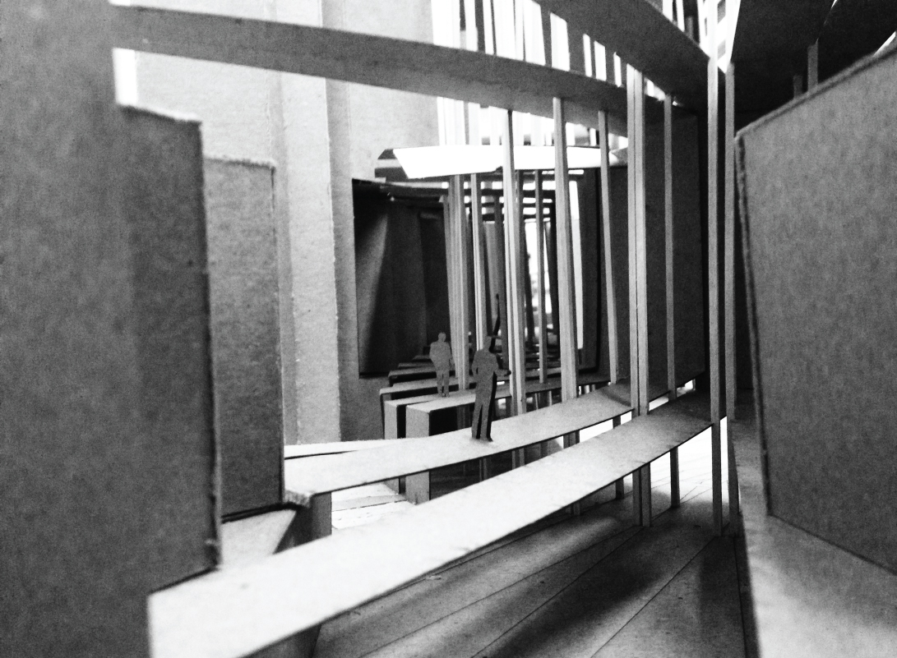
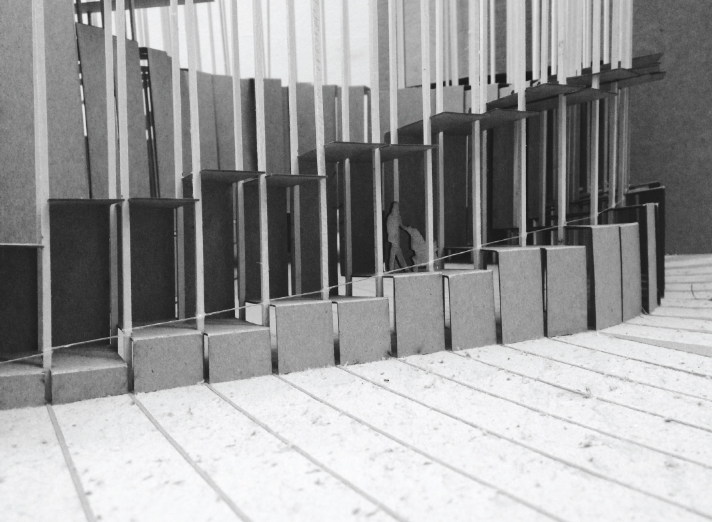
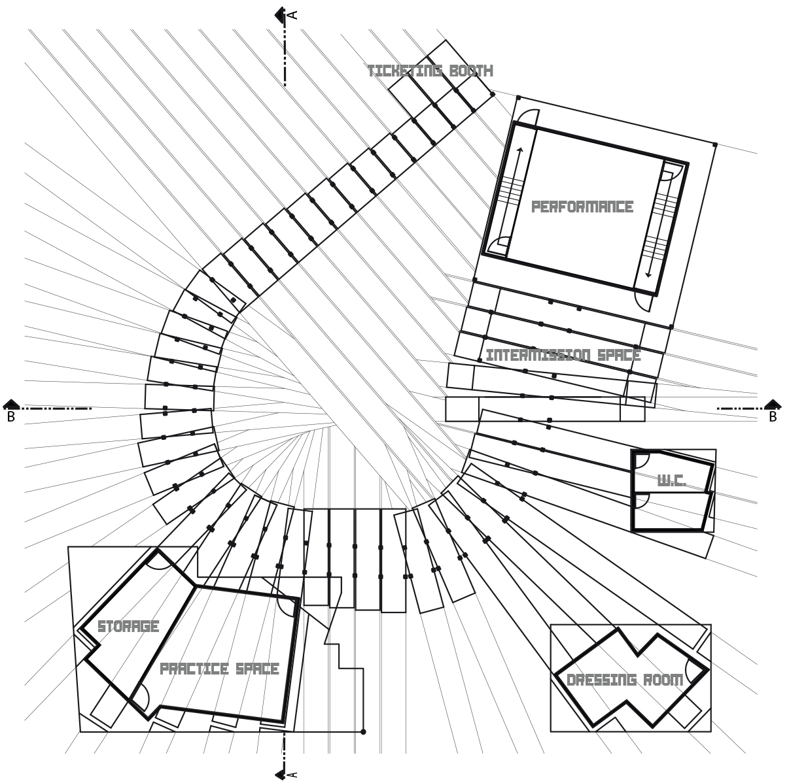
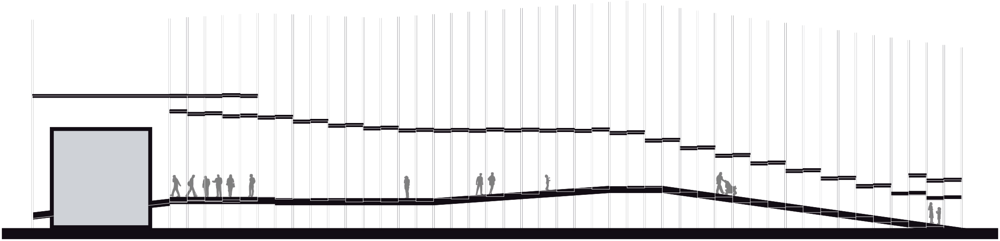
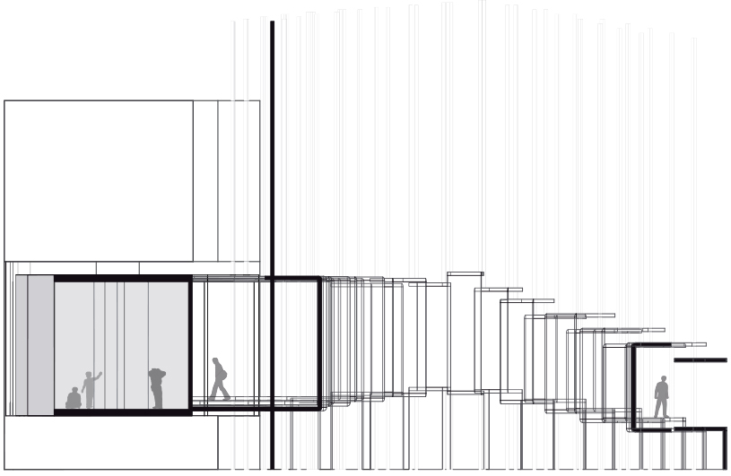
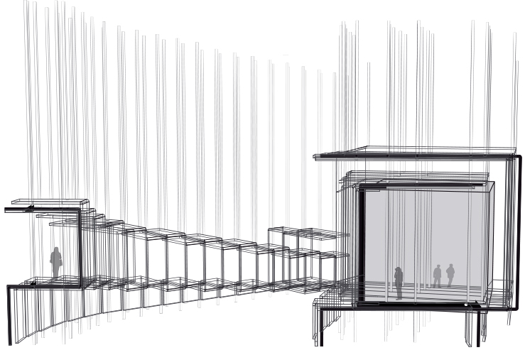

Improvisational Theater
A two dimensional surface, initially defined by lines (strings), were to create a cognitive transformation to a volumetric cube, the performance space. Through creating these oscillated surfaces spatial perceptions where implemented to the viewer. The cube is defined by a folding language that emerges from the ground plane and obits upward generating architectural spaces and ultimately manifests in the cube volume’s existence.
This language reframes the relation of the visitor to the space. By creating subtle shifts as the visitor experiences the spaces of the program, new elements and details are continuously revealed.









